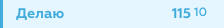
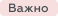
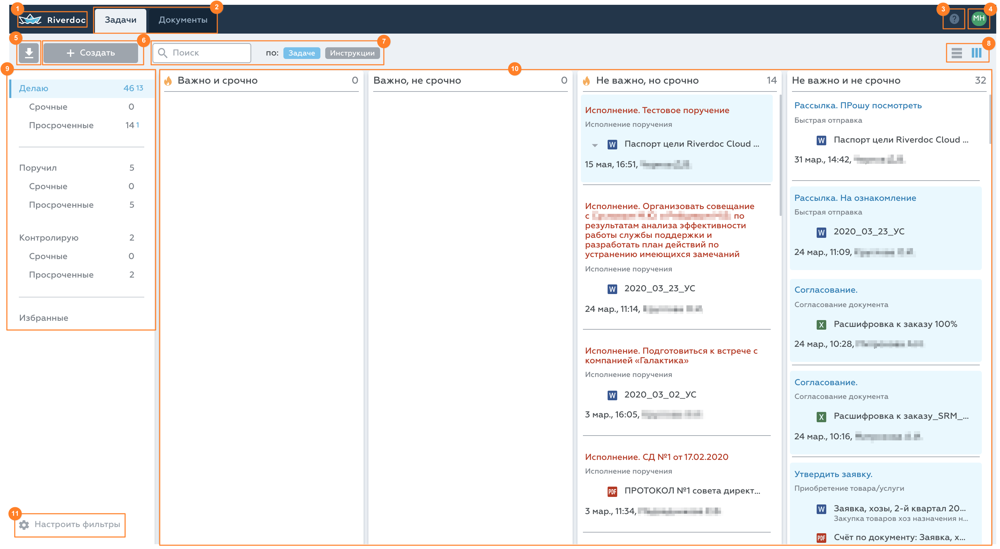
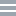
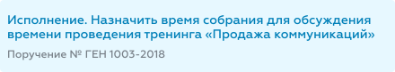
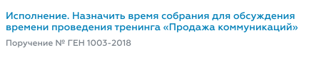
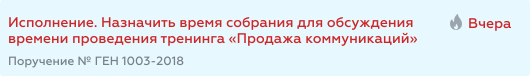
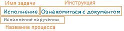

При запуске системы открывается раздел Задачи, группа задач Делаю.
В разделе Задачи можно выделить две части: меню задач в левой части окна и список задач в правой части.
Меню задач
Меню задач – список видимых групп задач. В этом меню пользователь выбирает группу, задачи которой отображаются в списке справа. Видимость групп можно изменить в пункте Настроить фильтры.
Меню задач
Счётчик задач
Справа от названия группы выводится общее количество задач, а для групп Делаю и Контролирую также выводится количество новых задач в данной группе. Пример:
 – в группе Делаю текущего пользователя содержится 115 задач, из них 10 – новых.
Если новых задач в Делаю и Контролирую нет, выводится только общее количество задач.
Список задач
В списке задач отображаются все задачи выбранной группы, назначенные текущему пользователю. В Riverdoc для всех групп задач, кроме "Избранные", доступны два режима отображения:
линейный список – список задач, отсортированный по одному из параметров (название, дата старта, автор и т. д.)
список по приоритету – задачи группируются по столбцам в разрезе срочности и важности:
•Важно и срочно;
•Важно, не срочно;
•Не важно, срочно;
•Не важно и не срочно.
К важным задачам относятся задачи, для которых постановщик включил флажок Важно, такие задачи помечаются меткой . К срочным задачам относятся задачи, до конца срока выполнения которых осталось менее заданного периода (по умолчанию – три дня), такие задачи помечаются значком .
 Раздел "Задачи", представление в виде списка по приоритету [1] Перейти к стартовой странице системы: раздел Задачи → Делаю (линейный список). [2] Выбрать раздел. [3] Открыть справку | Перейти в службу поддержки. [4] Открыть профиль пользователя | Выйти из системы. [5] Загрузить файлы с компьютера. [6] Создать документ | Запустить процесс | Создать поручение. [7] Отфильтровать задачи. ("Область фильтрации задач"). [8] Переключить способ отображения задач (линейный список или список по приоритету). [9] "Меню задач". [10] "Список задач". [11] Настроить меню задач. |
Переключение между режимами выполняется с помощью значков  / , расположенных в правом верхнем углу раздела. При смене режима меняется цвет значка: текущий режим выделяется синим цветом.
В линейном списке пользователь может настроить формат записи задачи по своему усмотрению, а именно: скрыть инструкцию или описания задачи, имя задачи скрыть невозможно. Сделать это можно с помощью значка в правой верхней части страницы.
Маркировка задач
В Riverdoc приняты следующие обозначения задач в зависимости от их статуса:
Статус задачи/пример |
Комментарий |
Новая (или неоткрытая)  |
•фон – голубой; •название задачи – шрифт синего цвета. |
Прочитанная (пользователь открыл карточку задачи)  |
•фон – прозрачный; •название задачи – шрифт синего цвета. |
Просроченная (пользователь не завершил задачу в поставленный срок)
или  |
•название задачи – шрифт красного цвета; •фон – прозрачный или голубой (в зависимости от того, прочитана или не прочитана просроченная задача); |

{kind=link}
В каком формате записывается название задачи
По умолчанию полное название задачи формируется из имени задачи, инструкции к задаче и названия процесса/поручения, по которому проходит эта задача:

•Имя задачи – название задачи: системное (в случае поручения) или указанное администратором при настройке процесса (в случае задачи по процессу).
•Инструкция – значение обязательного поля Инструкция, которое пользователь заполняет при создании поручения или задачи по процессу. Также инструкция может быть предзаполнена администратором в настройках процесса, но доступна пользователю для редактирования.
•Название процесса – название процесса/поручения, по которому выполняется задача.